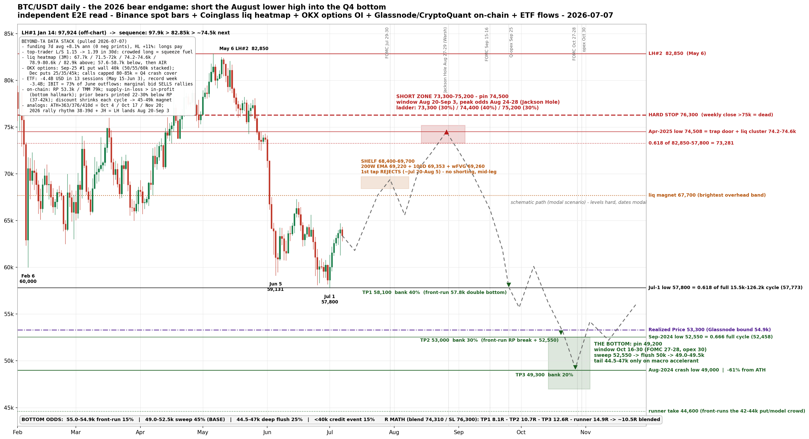

Independent end-to-end read · published 2026-07-07
Every number below is re-derived from raw data: exchange bars, the liquidation heatmap, options open interest, funding and positioning, on-chain cost basis, ETF flows, and cycle math. Levels are the hard part. Dates are modal windows, not appointments.
A prior independent pass three days earlier, on different data, landed 48,000 centered Nov 3. Two passes, same cluster: 48.0-49.5k, mid-Oct to mid-Nov. The convergence is the conviction.

Structure (raw exchange bars). The bear sequence of lower highs: 97,924 (Jan 14) then 82,850 (May 6). Cycle low 57,800 (Jul 1), which is the 0.618 retracement of the entire 15,476 → 126,200 bull to within $27 (57,773). The golden pocket of the whole cycle has already been tagged. The Jul 6 dip to 61,307 hit the dip-buy shelf and bounced; the relief leg is live. This bear's two prior rallies ran +26.7% and +27.5% in 38-39 days each; the same move off these lows lands at 73,200-73,700 by mid-August, then a one-to-two week topping process.
Liquidation heatmap (3-month, Binance perp). The ladder above price: 67,700 (single brightest overhead band, first magnet), 70,500-72,000, then a fat cluster at 74,200-74,600, then 78,900-80,600 and the brightest line of all near 82,900. The squeeze destination is painted exactly on the April-2025 yearly low (74,508). Below price: a fuel pool at 57,600-58,700, then near-air until the 2024 shelf. That air pocket is how 58k becomes 52k fast.
Options (open interest by strike). September 25 expiry: the single biggest put wall sits at 40,000, with 50k, 55k and 60k heavily stacked. December: puts at 25k, 35k, 45k while calls cap out at 80-85k. A separate pass found Sep and Dec max pain both at 72,000 and roughly 14k BTC of call walls at 80k. Translation: the sophisticated money is paying for Q4 crash cover and selling upside above 80k.
Positioning. Funding has averaged +8.1% annualized over 7 days with zero negative prints (+11% on Hyperliquid): longs are paying to be early in a bear market. The top-trader long/short ratio climbed 1.15 → 1.39 in 30 days: crowded. That is the fuel that first powers the squeeze into 74.5k as shorts get stopped, then cascades below 57.8k when the longs unwind.
Order books, honestly. Real resting liquidity only quotes about ±2% from mid (the biggest actual walls right now: 460 BTC bid at 63,200, 158 BTC ask at 63,250). Anyone claiming to see "order-book walls at 77k" from a 63k book is reading tea leaves. Far levels come from the heatmap, the options surface, and structure, not from the book.
On-chain. Realized price 53,300 and falling slowly; Glassnode's band tops at 54,900. True Market Mean sits at 79,000, meaning the average active investor is deep underwater and rallies get sold. Supply-in-loss just overtook supply-in-profit, a hallmark of every prior bottom, though it persisted for months in 2018 and 2022 before the actual low. Critical fact: every prior bear printed its low 22-30% below realized price (that would be 37-42k here). The discount has shrunk each cycle; the ETF-era holder base argues it shrinks again to roughly 8-15% below, which is 45-49k. The counter-camp (CryptoQuant) calls an "ultimate bottom" near 55,000 at the realized-price band; no prior cycle ever bottomed above it. That camp is the main risk to the deeper targets.
Flows. Spot ETFs bled $4.4B across 13 straight sessions (May 15-Jun 3), including the worst week on record at -$3.4B; one fund alone was 73% of June outflows, including a $1.29B dark-pool block sale. The marginal bid is not just absent, it is distributing into strength. And the largest corporate holder's cost basis sits at 75,646, directly on top of the lower-high zone, with a $1.25B sale authorization: a structural seller parked at the target.
Cycle clock. The prior bears bottomed 363, 376 and 410 days after their ATHs. From October 6, 2025 that maps to Oct 4, Oct 17 and Nov 20, 2026. The 2022 analog is the template for the exact sequence in question: an August 15 lower high, killed at Jackson Hole, then Q4 capitulation.
| Date | Expectation |
|---|---|
| Jul 8-20 | Chop 61-65k. A last sweep of 59.1k is possible; odds fade after Jul 20. |
| Jul 20 - Aug 5 | Push into the 67,700 liquidation magnet, then the 68,400-69,700 shelf (200W EMA 69,220 + 100D 69,353 + weekly FVG 69,260). First tap rejects. Not a short, it is mid-leg. |
| Jul 29-30 | FOMC (decision lands Jul 31, 2 AM PHT). The pullback excuse, to ~65-66k. |
| Aug 10-19 | Second push through the shelf. 72k is the obvious-short trap; the stops above it are the fuel. |
| Aug 20 - Sep 3 | Terminal wick 73,300-75,200, pin 74,500, peak odds Aug 24-28. Jackson Hole runs Aug 27-29; the Fed chair speaks ~Fri Aug 28 (10 PM PHT). 2022 played this exact script. |
| Sep 7-18 | Rollover. A daily close below 68,000 confirms. The Sep 15-16 FOMC (decision Sep 17, 2 AM PHT) is the accelerator; the dots already project a hike. |
| Sep 21 - Oct 2 | Weekly close below 62,000, then the July double bottom (57,800) breaks around quarterly opex Sep 25. The 57.6-58.7k liquidation pool cascades. |
| Oct 5-14 | Dead-cat to ~60k, backtest of the broken shelf. Mt Gox distribution deadline Oct 31 looms. |
| Oct 16-30 | Capitulation: sweep 52,550 (Sep-2024 low, 0.666 of the full cycle), break realized price 53,300, flush the 50,000 psych, print 49,000-49,500. FOMC decision Oct 28 (Oct 29, 2 AM PHT), opex Oct 30. |
| Nov 9-20 | Only if October extends (the 2015-analog tail). Below 44,600 requires a genuine credit event. |
15% front-run at 54,900-55,300 (the realized-price-band camp is right) · 45% base: the 49,000-52,550 sweep, pin 49,200 · 25% deep flush 44,500-47,000 (the realized-price-discount analogs) · 15% sub-40,000 (a 2022-style credit event only)
Three staged tranches, equal risk each (call it 1R per tranche). Scale in on confirmation only. Never average into a losing short.
| Tranche | Level | Condition | Stop | Window |
|---|---|---|---|---|
| T1 starter | 73,300 (30%) / 74,400 (40%) / 75,200 (30%) blended ~74,310 | The lower-high zone itself. No confirmation, this is the high-R lottery on the level. | 76,300 (~2.7%) | Aug 18 - Sep 3 |
| T2 add | 69,400-70,100 | Only after a daily close < 68,000, on the retest. | above retest high, guide 72,100 | Sep 7-18 |
| T3 final | 63,200-64,100 | Only after a weekly close < 62,000, on the retest. T1/T2 at breakeven first. | above retest high | Sep 21 - Oct 2 |
| Target | Level | Size | R multiple | Logic |
|---|---|---|---|---|
| TP1 | 58,100 | bank 40% | 8.1R | Front-run the 57,800 double bottom; the liquidation pool there means fast wicks. |
| TP2 | 53,000 | bank 30% | 10.7R | Front-run the realized-price break and the 52,550 sweep. |
| TP3 | 49,300 | bank 20% | 12.6R | Inside the pin zone. |
| Runner | → 44,600 | trail 10% | 14.9R | 2-day-high trailing stop. Front-runs the 42-44k model crowd and the Dec 45k put wall. |
Full-plan blend is roughly 10.5R on T1's risk if the ladder completes, more if the confirmation adds fire. Worst case is -1R (T1 stops, nothing confirms) to -2R max concurrent. Execution hygiene: isolated 15-20x at most, or cross margin only with equity at least twice the stop distance; a dedicated sub-account; liquidation must always sit beyond the stop.
Below 52,550: no new shorts, ever. That is the accumulation doorway. The bigger trade on the other side is the 12-24 month spot long from that zone.
Dates are modal windows, not appointments. Levels hard, timing soft.
Raw data pulled directly: Binance spot and futures REST (klines, L2 depth, funding, open interest, top-trader long/short), OKX public options open interest, Hyperliquid info API, Coinglass 3-month liquidation heatmap.
Analysis by Claude (Anthropic), acting as a veteran macro-crypto swing trader; reviewed by Claude Fable 5 on max reasoning effort; published by Rein Duran. Probabilistic scenario work with defined risk and hard invalidation, shared for discussion. Not financial advice. Anyone trading this owns their own risk, sizing, and stops.